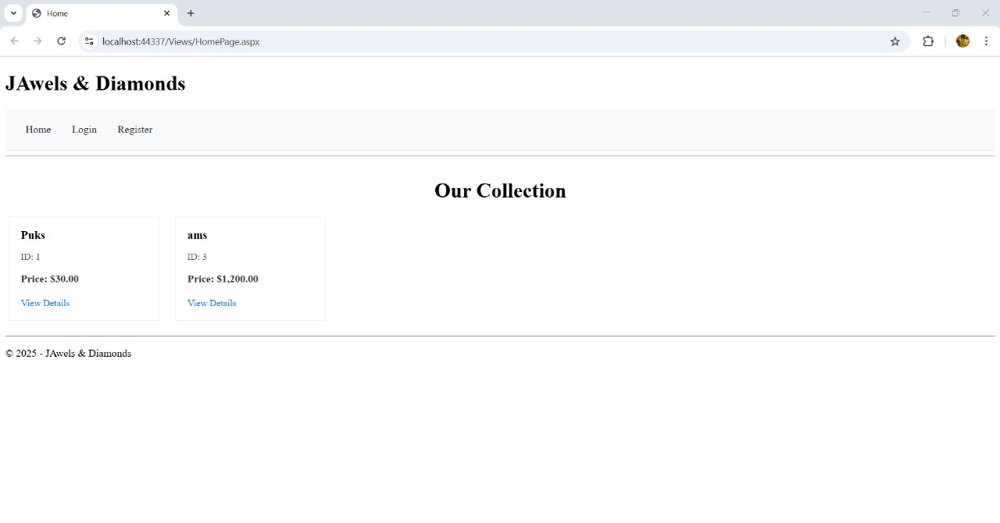

For a university Pattern Software Design course project, I developed a sophisticated web application for "JAwels & Diamonds," a jewelry e-commerce store, using the **ASP.NET** framework and **C#**. As a Full-Stack Developer on the team, I contributed to both **frontend UI implementation** and **backend logic**, focusing on creating a system to streamline order management for the business while providing a seamless online shopping experience for customers. A core requirement of the project was the practical implementation of **Domain-Driven Design (DDD)** principles, demonstrating the ability to apply advanced software architecture patterns learned during the semester. Additionally, I worked on integrating **SAP Crystal Reports** to generate dynamic income reports, adding significant business value and data visualization capabilities to the application.
